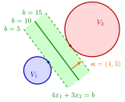

Separation of Disjoint Convex Sets¶
Theorem¶
Let be nonempty convex sets.
(a) If , there is a separating hyperplane of and .
(b) If and the set is closed, there is a separating hyperplane of and that has a nonempty intersection with at most one of and .
(c) If and , there is a separating hyperplane of and . Here may meet both and (Example 2 below).
Interpretation¶
Two convex sets that do not overlap can always be put on opposite sides of one hyperplane. Part (c) relaxes "do not overlap" to " does not reach into the interior of ", provided has interior points.

The figure shows Example 1 below. Every line with separates the two discs; together they fill the green strip. Its dashed edges and touch at and at , and the middle line meets neither set, as part (b) promises when is closed. Example 2 below shows disjoint convex sets whose only separating hyperplane meets both.
The proof turns two sets into one set and a point. The difference is convex because it is the combination of two convex sets (see Intersection and Sum of Convex Sets), and because the sets are disjoint. Separating the point from the closed convex set gives a linear function with , so for all , . Moving the level to , which is finite because is bounded below on by any , gives . For (c), separate from and use that every point of is a limit of interior points of (see Interior and Closure of a Convex Set).
Every hypothesis matters. Without convexity a circle and its centre cannot be separated. Without closedness of the only separating hyperplane may meet both sets (Example 2 below). Two crossing segments meet only in one point and have no interior, and no hyperplane separates them (Example 3 below).
A common misconception is that disjoint closed convex sets are separated with a positive gap. The closed sets and are disjoint, but their only separating hyperplane has distance to both; here is not closed.
Key Results¶
- Disjoint convex sets have a separating hyperplane.
- If moreover is closed, the separating hyperplane can be chosen to meet at most one of the two sets: if it meets , it does not meet .
- If and , a separating hyperplane exists, possibly meeting both sets.
- Conversely, if separates and , then : a point of in would lie on , and a small ball around it inside would have points strictly on the side of . So for , a separating hyperplane exists if and only if (Example 4 below).
- Proof device: , and is convex; separation of a point and a closed convex set does the rest.
Examples¶
1. Two discs. Let and in . The centres are apart and , so the discs are disjoint, and is closed. With , and . So separates and for every . For it touches at , for it touches at , and for it meets neither set, in line with part (b).
2. Closedness of matters in (b). Let and : both are convex, they are disjoint, and together they fill . Because and contain open half-planes, a separating hyperplane must be horizontal, . Then and both give , which forces , so is the only candidate. This separates them but contains and . There is no contradiction with part (b): is not closed, as is a limit of its points without belonging to it. The example also illustrates the remark in part (c): and , and the separating hyperplane meets both sets.
3. Crossing segments. Let be the segment from to and the segment from to . Both are convex and , so . A separating hyperplane would pass through the common point , so . Then forces and forces (the other orientation gives the same), so : there is none. Parts (a) and (b) do not apply because , and part (c) does not apply because (and also , so swapping the roles does not help).
4. A point of in the interior of . In let and , with common boundary point . Comparing the normal cones of the two sets at shows that no separating hyperplane passes through ; since a separating hyperplane must contain every common point, none exists. A direct reason: gives the values , , , in , so all inequalities are strict and , and the values , , , in , so . By the converse in Key Results, and cannot be separated.
Prerequisites¶
- Separating Hyperplane
- Separation of a Point and a Closed Convex Set
- Intersection and Sum of Convex Sets
- Interior and Closure of a Convex Set
- Infimum
Related Concepts¶
- Supporting Hyperplane
- Nearest Point of a Closed Convex Set
- Normal Cone of a Polyhedral Set
- Polyhedral Convex Set
- Minimum Characterized by Separation
- Farkas' Lemma
Sources¶
- Math VI: Convexity and Optimization · Week 2
- H. E. Nusse and M. Dienstknecht, Math VI: Convexity and Optimization, lecture notes 2026–2027, Section 2.1
Aliases: separating hyperplane theorem, separation theorem for convex sets, separation of convex sets Keywords: V_1\cap V_2=\varnothing, V_1-V_2={\boldsymbol{x}-\boldsymbol{y}\colon\boldsymbol{x}\in V_1,\ \boldsymbol{y}\in V_2}, V_2\cap\operatorname{Int}(V_1)=\varnothing, \alpha=\inf{f(\boldsymbol{x})\colon\boldsymbol{x}\in V_1}, disjoint convex sets, hyperplane meeting at most one of the sets Symbols: alpha, element of, intersection, real numbers, subset, union
Last updated: 10 November 2026 16:43
Separation of Disjoint Convex SetsMinimum Characterized by SeparationSeparating HyperplaneSeparation of a Point and a Closed Convex SetIntersection and Sum of Convex SetsInterior and Closure of a Convex SetInfimumSupporting HyperplaneNearest Point of a Closed Convex SetNormal Cone of a Polyhedral SetPolyhedral Convex SetFarkas' Lemma